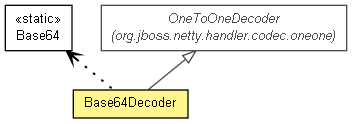

org.jboss.netty.handler.codec.base64
类 Base64Decoder
java.lang.Object
 org.jboss.netty.handler.codec.oneone.OneToOneDecoder
org.jboss.netty.handler.codec.base64.Base64Decoder
org.jboss.netty.handler.codec.oneone.OneToOneDecoder
org.jboss.netty.handler.codec.base64.Base64Decoder
- 所有已实现的接口：
- ChannelHandler, ChannelUpstreamHandler
@ChannelHandler.Sharable
public class Base64Decoder
- extends OneToOneDecoder

Decodes a Base64-encoded ChannelBuffer or US-ASCII String
into a ChannelBuffer. Please note that this decoder must be used
with a proper FrameDecoder such as DelimiterBasedFrameDecoder
if you are using a stream-based transport such as TCP/IP. A typical decoder
setup for TCP/IP would be:
ChannelPipeline pipeline = ...;
// Decoders
pipeline.addLast("frameDecoder", new DelimiterBasedFrameDecoder(80, Delimiters.nulDelimiter()));
pipeline.addLast("base64Decoder", new Base64Decoder());
// Encoder
pipeline.addLast("base64Encoder", new Base64Encoder());
| 从类 java.lang.Object 继承的方法 |
equals, getClass, hashCode, notify, notifyAll, toString, wait, wait, wait |
Base64Decoder
public Base64Decoder()
Base64Decoder
public Base64Decoder(Base64Dialect dialect)